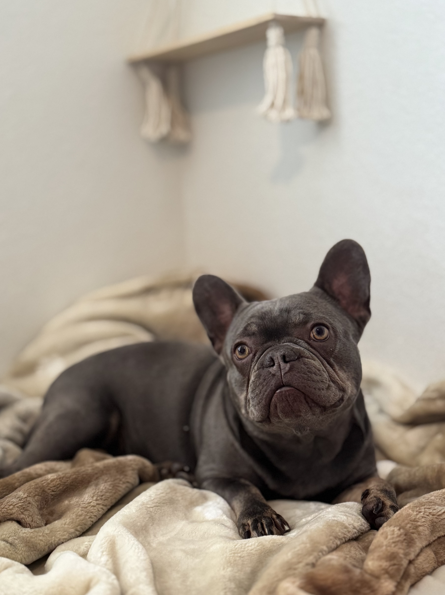
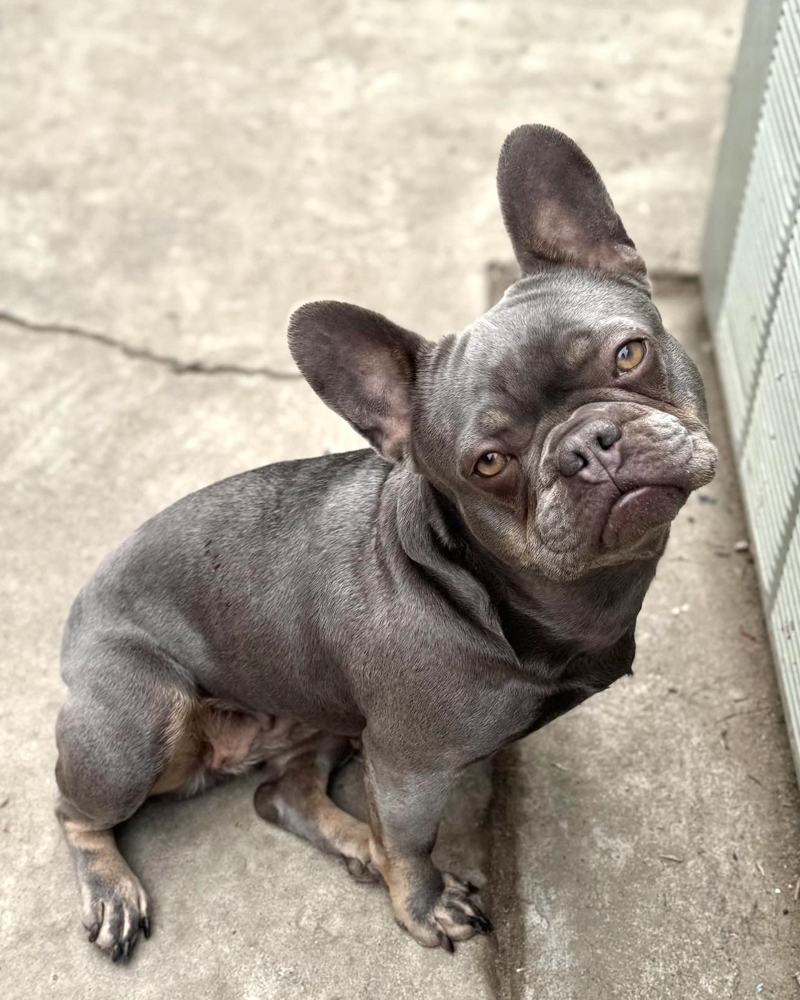
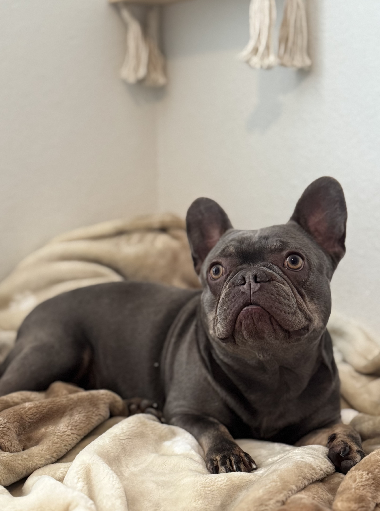

Suri
About Suri:
Suri is a beautiful short haired Lilac and tan girl. She has great breathing,
and is very athletic and healthy. Her DNA carries Newshade Isabella and intensity- those striking blue or yellow eyes that really glow.
Her shiny lilac coat and extremely soft fur really
stand out against other French Bulldogs as well.
Genetics: French Bulldog
Color: Lilac and Tan
DNA: Carries Isabella and Intensity
Pedigree: AKC Registered